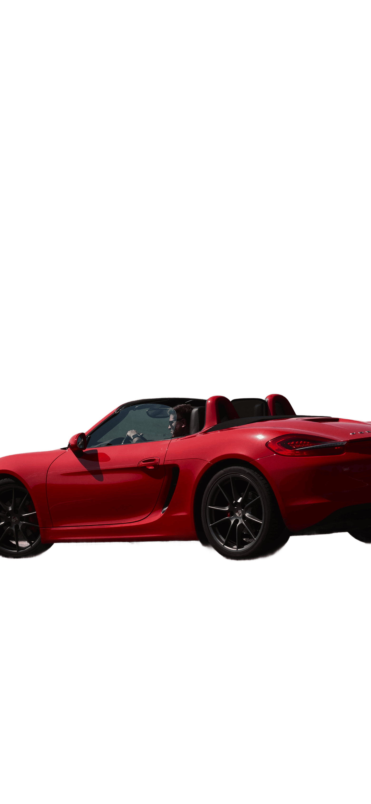
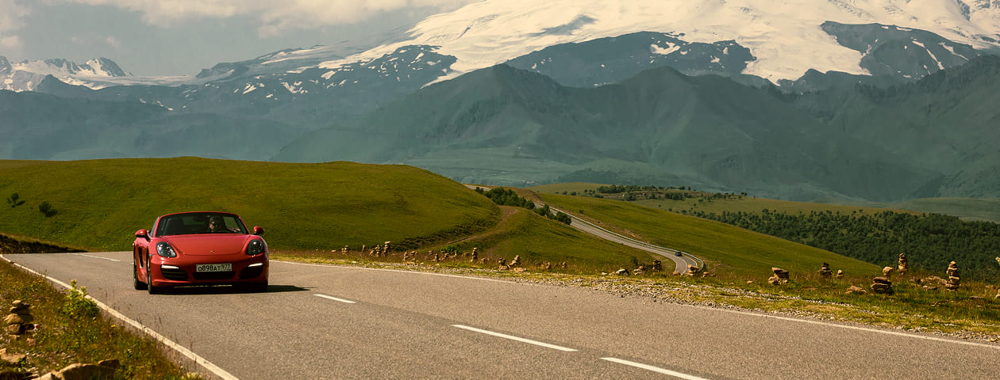
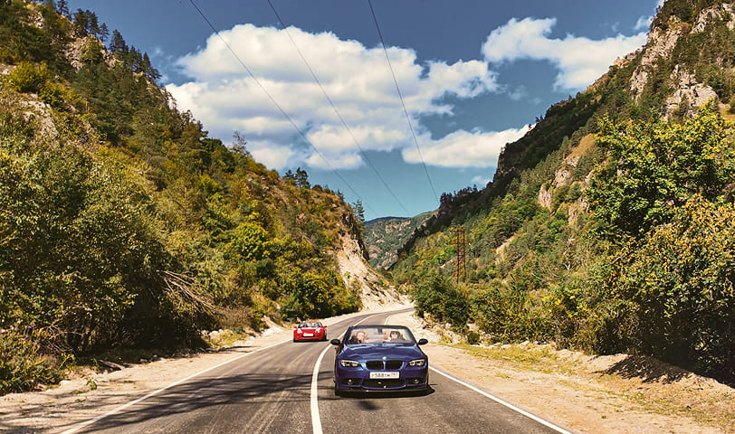
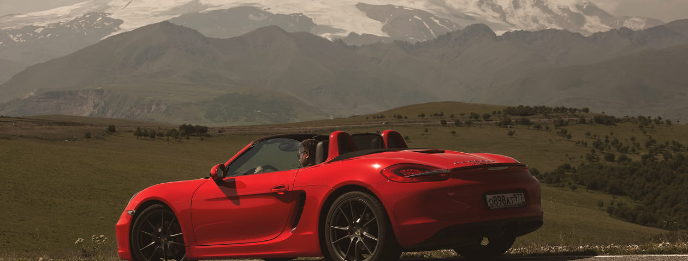
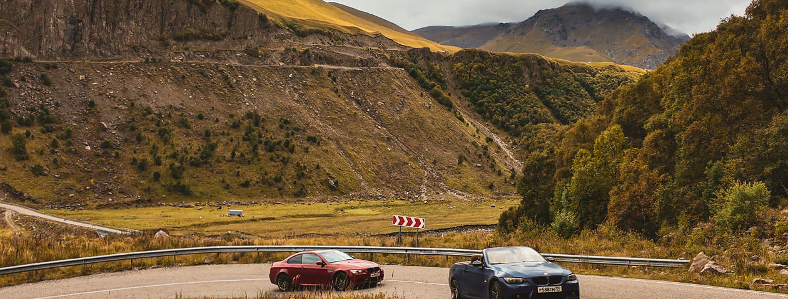
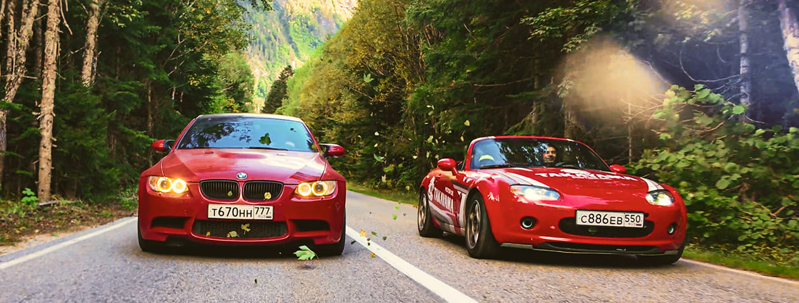

Неделя по лучшим серпантинам Кавказа на вашем спорткаре. Без колонн. Без туристов.
забронировать турФилософия тура
Программа
Дороги, ради которых вы выбирали свой автомобиль.
Горы. Серпантины. Высота.
О нас
Это путешествие про состояние. Когда движение приносит удовольствие не только скоростью, но и наслаждением от траекторий и природы.
Мы годами ездили по Кавказу за рулём, а не по карте. В этот маршрут вошли дороги, которые раскрываются в движении. И места, где важно замедлиться, чтобы увидеть регион целиком, а не проехать его насквозь.
Отзывы
Каждый тур — это личный опыт. Мы собираем впечатления тех, кто уже прокатился вместе с нами по серпантинам, чтобы вы могли увидеть путешествие их глазами.





На шаг ближе к мечте
Всё, что важно знать перед стартом
-
Из скольких человек может состоять экипаж?Стандартный экипаж состоит из одного или двух человек (водитель и штурман). Если ваш спорткар имеет более двух мест, количество участников может быть увеличено, однако мы рекомендуем формат парного путешествия для максимального комфорта.
-
На какой машине я могу поехать?На любом исправном спорт- или суперкаре, который приносит вам удовольствие от езды и находится в хорошем техническом состоянии.
-
Как добираться до места старта?Вы прилетаете в аэропорт назначения рейсом, который вам удобен. Мы берем на себя логистику вашего автомобиля: доставим его на закрытом автовозе из Москвы или другого города прямо к дверям отеля к началу тура.
-
Насколько безопасны дороги?Мы выбираем маршруты с качественным асфальтовым покрытием. Сопровождающий автомобиль всегда находится рядом для помощи в навигации или технических вопросах, а подробный брифинг перед каждым днем помогает заранее знать о сложных участках.
-
Какой планируется среднесуточный пробег?В среднем мы проезжаем от 150 до 250 км в день. Это оптимальное расстояние, которое позволяет насладиться управлением автомобилем, сменить несколько локаций и при этом не чувствовать усталости к вечеру.
-
Какое качество дорожного полотна?Маршрут проложен по дорогам с хорошим и отличным покрытием, подходящим для низкого клиренса спорткаров. Мы лично инспектируем каждый километр трассы перед формированием итоговой программы.
-
Чем заняться помимо езды?Программа включает гастрономические ужины, короткие прогулки в знаковых местах, отдых в лучших SPA-отелях региона и вечернее общение в кругу единомышленников. Это путешествие про баланс драйва и эстетики.
-
Что с бензином? Мне нужен 100-й.Мы заранее планируем точки дозаправки на проверенных сетевых станциях, где всегда в наличии качественное топливо АИ-100. Весь маршрут выверен с учетом запаса хода спортивных автомобилей.
-
Могу ли я сам приехать на машине до места старта?Да, конечно. Если вы предпочитаете самостоятельный переезд до точки сбора, мы скоординируем время вашего прибытия и встретим вас в первом отеле по программе.
-
В каких отелях мы будем проживать?Мы выбираем только лучшие отели уровня 5* и эксклюзивные бутик-отели с высоким рейтингом сервиса. Для нас важна не только эстетика номеров, но и наличие охраняемой парковки для ваших автомобилей.
Ваше путешествие начинается здесь
Дальше — личный контакт и детали маршрута